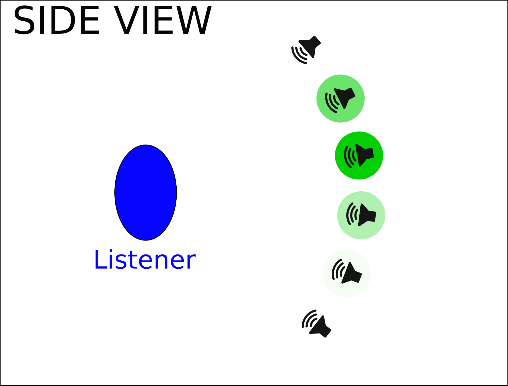
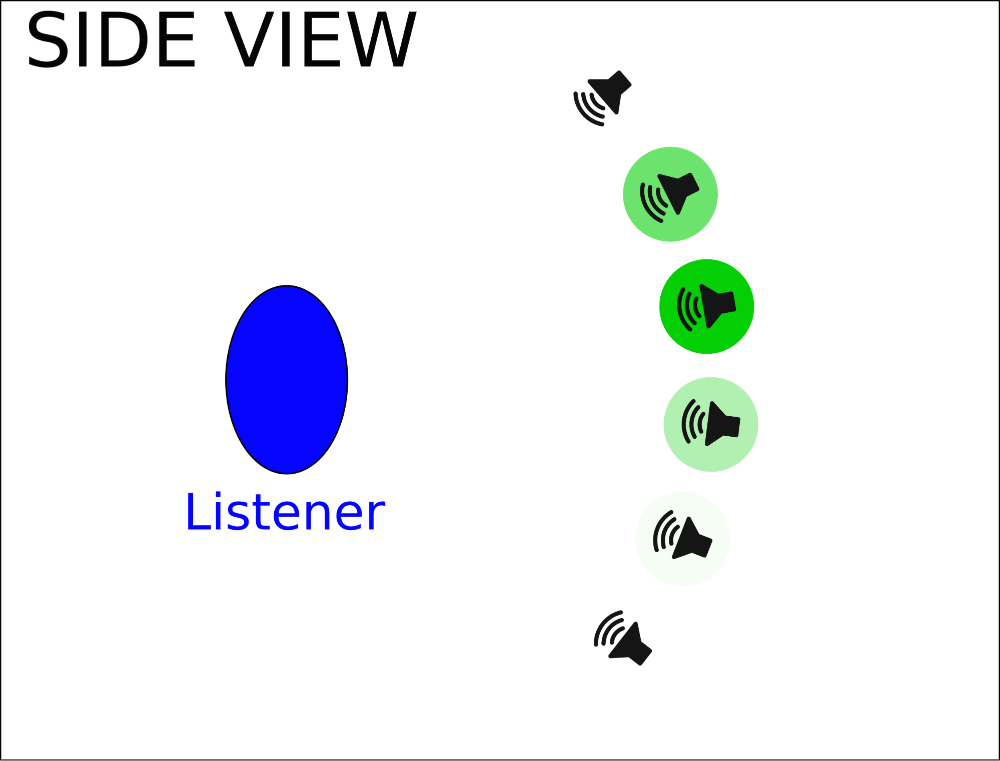

|
|
Project S.N.A.P
Final Design Report
Prepared by:
Dylan Carlson
carl0545@vandals.uidaho.edu
Andrew Rose
rose0531@vandals.uidaho.edu
Dustin Fox
fox7113@vandals.uidaho.edu
University of Idaho
Capstone Design
May 5, 2018
Table of Contents
7.1.3.2 Shared Memory Input 14
7.1.6 Visual Audio Algorithm 15
7.2.5 Character Controller Design 21
8.1 Different Depth Cameras 24
8.2 Alternative Sound Libraries 24
8.3.1 Sine-to-Square Gradient 24
The end goal of project S.N.A.P is to create a device that utilizes everyday cameras in conjunction with computer vision and binaural audio, to convert visual signals into auditory signals. This device would be a step toward making environment navigation easier for the visually impaired.
There are many different approaches, tools, and algorithms that could be used in order to make this goal a reality. Because of this, all of these different options must be explored and tested in order to find the best possible approach to this problem. That is where our team comes in. Our task was to create a research platform with a modular design that allows for future development and speeds up the process of building and testing new and different algorithms.
Our platform is divided into two separate components: The Test Bed which is a virtual environment used for testing the algorithms without the need of a physical camera device, and the Visual Audio Engine which is our audio algorithm framework built in C++ that all of the audio algorithms can be built with.
Our sponsor, Dan Schneider, wanted to create a device that assisted the visually impaired to be able to have a way to perceive their surroundings through the use of audio navigation. Dan noticed that there hasn’t been a significant technological advancement for the visually impaired since 1944 with Richard Hoover introducing the Hoover Method. However since then, there has been nothing.
Recent case studies have shown that humans are incredible at adapting to new forms of input to interpret their environment. In some cases individuals are able to ride a bike solely through echolocation. Thus our client raised a question; what if humans were able to receive a high resolution acoustic picture of their environment? Would this allow them a simpler way to perceive their environment than the current technological solutions?
If able to successfully create a device that can allow the visually impaired to perceive their surroundings through sound, then we could be looking at the first significant technological invention for the visually impaired in over 70 years. This device would become as critical and popular to the visually impaired community as hearing aides are for the hearing impaired community.
The previous group created a working algorithm as a proof of concept. Our job was to take that algorithm and expand it into robust and configurable software system and build a virtual testing environment to aid researchers in finding the best possible visual to audio algorithm.
Audio Algorithms
Configurations
Logging
Maps/Tests
Installation
Since we are a small elite team of only three developers, we adopted a pretty agile development strategy meaning that each of us worked on everything at some point in time, but major contributions are as follows:
Dylan Carlson
Andrew Rose
Dustin Fox
September
October
November
December
January
February
March
April
May
When it comes to 3D audio libraries, one of the most used libraries in the programming/game development world is FMOD. The benefits of using FMOD would be up to date documentation and a wealth of knowledge/tutorials/etc on the internet about how to use the library. The only down side to FMOD is it is not free software, meaning we would need a license to use it. Our project constraints included only using open source libraries so this disqualified FMOD.
Python is a great language for quick prototyping as well as robust programming. We considered building the Visual Audio Engine in python in order to make it easier for non-programmers to understand the algorithm and add to the Visual Audio Engine since python is such an easy language to read and learn. Ultimately we decided against it because we could not find a well supported 3D audio library to use besides a port that someone wrote for FMOD. More research could be done to find a better alternative to allow python development.
The Unreal Engine was another engine our group looked at when considering which engine to use to build our test bed. Unreal offers its product for free, however requires 5% of the revenue your company makes of their product. This differs from Unity’s licensing, because Unity doesn’t require a percentage of how much your product make. Instead Unity offers different versions of the Unity engine, ranging from a free version to a pro version which requires a monthly subscription. Unreal also offers a very easy to use user interface now, which puts it on par with Unity’s initial learning curve. The graphical capabilities of the Unreal engine do surpass Unity’s. Unreal is able to create graphic on par with games currently being released on next-gen consoles. Unreal also has a solidly established asset store that is on par with Unity’s asset store.
This is an open source project that has improved upon the original openAL that has not been updated since 2008. OpenAL Soft on the other hand is continually updated. It has made various bug fixes and improvements to the original source code, while remaining (mostly) forward compatible with original openAL code.
One of the main reasons why OpenAL Soft would be useful for this project would be the addition of HRTF support which stands for Head Related Transfer Function. Essentially, it vastly improves the 3D audio by calculating the various differences between sounds entering the right ear versus the left ear and their relative distance apart. The original OpenAL only really allows the user to be able to tell if a sound is on the left or the right, HRTF allows for users to tell if sounds are above and below them as well as in front or behind.
Our group ultimately arrived at the decision to use the Unity engine as opposed to the Unreal Engine for the main reason that it was more indie developer friendly. As long as your product doesn’t surpass a profit of $100,000 then you don’t owe Unity any money. This works great for this project, because our testbed will only be temporary and should never exceed earning over that specified amount. Along with this our group had more of an understanding of how to use Unity and our University offered a course on it, while this was not the case for the Unreal Engine.
For our 3D audio library we decided to stick with OpenAL mainly because it is free software, and it has an easy installation process to allow for better distribution. OpenAL is no longer supported and the code has not changed since 2008, but it remains the most widely used open source 3D sound library available. It has everything we need for this project.
As one of the most popular open source libraries for everything computer vision/image processing, OpenCV is an excellent choice for our purposes. It has libraries for programmatically modifying/analyzing images very efficiently.
The goal of the Visual Audio Engine is to create a series of modules that could assist in writing visual audio algorithms that are extremely configurable. Each module is designed to be as intuitive as possible so that future developers can use the helper functions within them to write more audio algorithms in the Visual Audio Algorithm class.
The idea was that future teams and researchers could also write new modules for different technologies such as FMOD and since everything is abstracted out to the modules they could retain compatibility with the original audio algorithms because they could just duplicate the functionality of the OpenAL Module in a new FMOD Module.
This module contains all of the functions necessary for reading configurations for the Visual Audio Engine configurations from JSON formatted files.
The C++ json library we utilized in this project is a header-only library that we found on github written by Niels Lohmann. It seemed to be very well tested, easy to use, and moderately efficient. The github for this project can be found at: https://github.com/nlohmann/json
The Config Types file contains all of the types necessary to use a config throughout the system. These types have been separated from the config module in order to avoid having to include the config module in every file that needs to use the configs. The reason for this is the config module includes a very large amount of code from the json library and if we include it with every file it would substantially increase compile time.
An abstract class that is designed to be the unified way that the Visual Audio Engine accepts depth data as input. The idea is that any future development including new camera systems or programs that generate test data, it should be relatively easy to create a new sub-class of the Input module and implement the get_frame function to get depth data from that new source and convert it into a Mat. That way no matter where the depth data is coming from, it remains compatible with the rest of the system.
A sub-class of the Input Module that simply reads an image from the filesystem.
A sub-class of the Input Module that utilizes the Shared Memory DLL to receive depth data. Particularly in this project the depth data will be coming from the Test Bed, however any program that has been written to utilize the Shared Memory DLL correctly could use this module with minimal tweaking.
A module that contains all of the functions that utilize openCV. This module accepts a Mat from an input module and splits it into a grid based upon the desired width and height of the grid. then calculates the pixel intensity with the get_intensity function at each point in the grid. Additionally it has functions for calculating logarithmic and other rolloff values in a range of (0-1). These rolloff functions are necessary because humans hear sound on a logarithmic scale instead of a linear scale.
|
|
|
|
A normal frame. |
Visual representation of OpenCV breaking a depth image into a grid. |
A module contains all of the functions required to utilize openAL in an audio algorithm without needing to write all of the boilerplate code. It also handles programmatic generation of sine waves through the init_sine_buffers function. As well as an abstraction of source movement in source_set_pos. This abstraction accepts an x and y coordinate that correlates with the vertical and horizontal ‘resolution’ of the module and moves the sources incrementally in front of the listener within the field of view using spherical coordinates. See diagrams below.
This is the module that contains the actual sound algorithms. Each algorithm is utilizing the functions and modules that have previously been described. The idea was that developers can continue to add more algorithms as functions to this module.
Our main menu, created within Unity, is a starting place for users to be able to create their own audio configuration, load a configuration, alter different map settings, review previous logs from previous tests and begin their own tests. Our main menu is solely one scene within Unity with many different canvases interacting with one another.
Here is a look at our Main Menu scene’s project hierarchy. There is the main canvas that has with it four children canvases attached to it; The main SNAPMenu, ConfigurationsMenu, LogsMenu, and MapSettings. Our MenuUI.cs script controls the behaviors of all of these canvas. It controls when to toggle a certain menu on and the rest off, it contains all the functions for the buttons, sliders, and input fields. It also holds all the variables for the input we receive from the users for their configurations and settings.
This is a look at our audio configurations menu that is reached from the main menu. It allows users to change variables regarding how the audio will be perceived to the user during the test. Users can alter variables such as the frequency range, horizontal and vertical resolution, the field of view, scanning type, etc. It allows users to be able to see which audio configuration works best for them.
Here is a look at the hierarchy of children attached to the configurations menu. There are an array of sliders, dropdown menus, and buttons. All of these components’ behaviors are controlled within the MenuUI.cs script. Every slider, button and dropdown menu has with it respective function(s). For example when the ‘back’ button is pressed the respective function know to not save any of the changes and revert back to the previous settings, and then return to the previous window.
Here is a view of our Map Settings window. From here, users are able to alter certain aspects about the map and select which map they would like to test on. Some of the variables users can change about a map from here are; how many cubes and sphere they would like spawned onto the map and the size ranges of the random objects.
The Map Settings canvas works almost identical to the audio configurations canvas. There are many sliders, buttons, input fields and select boxes. All of these components are also controlled within the MenuUI.cs script. There you will be able to find each components respective function to view their code in detail.
Our goal for our testing maps was to simulate real world environments. We did this through creating all of our maps as stochastic. Every time you load your map, random obstacles are generated within the map. This allows users to allows have to rely on their audio configuration to navigate the map, instead of being able to memorize the map design. We also created two separate maps the users can switch between, a static hallway map and a dynamic map.
Here is a snapshot of our random hallway map with random obstacles generated within it. The goal of this map is to navigate from the start to end of the hallway as quickly as possible while also minimizing their total number of collisions.
This is our hallway map within the scene view of Unity. The red cube is the area that random obstacles are able to spawn in. It is controlled by the empty game object, ‘Obstacle Generator’ within the scene’s project hierarchy. There is a SpawnObstacles.cs script attached to the object that controls the behavior of the entire obstacle generation such as how many obstacles to spawn and the sizes of the obstacles. However, these variables are set by the user within the map settings window.
Our dynamic map acts almost identical to our static hallway map, because it also will still generate random obstacles throughout map using the same ‘Obstacle Generator’ game object with the same script. However, the sole difference between this map is the additions of the red cylinders. These cylinders have a wander.cs script attached them that allow them to randomly move around the map. This is to simulate human movement, to force users to avoid obstacles moving their way. The wander.cs script controls the behavior of the movement of these cylinders such as their speed.
Our group wanted our character controller, that is used across both maps, to simulate real life first person movement, block the user’s vision so that the user must be solely reliant on their audio configuration, and allow for them to be able to know which direction they are heading.
Here is a look at our prefab project hierarchy for our character controller. It contains the character, main camera, player navigation audio source, and our vision blocker prefab. Our character and camera is apart of the FPSController prefab within Unity’s Standard Assets. Within this prefab, users can edit the walk/run speed, head bob, character sounds bytes, and much more.
We added to this prefab though our player navigation audio source that allows users to know which direction they are heading in the map. During a test, whenever a users presses the ‘p’ key, a robotic voice prompts the user which cardinal direction they are headed. The behaviors and sound bytes of this, is controlled within the PlayerNavigation.cs script. Along with this, we also added our VisionBlocker prefab which blocks the users vision of the map, while also prompting them with a tutorial.
In the test bed there are two folders called “bin”. One of the folders is inside the “Assets” folder, and the other one is outside the “Assets” folder. This was intentional. The “bin” folder inside the “Assets” folder is so you can run the test bed with the visual audio engine without building the project. The “bin” folder outside the “Assets” folder is so you can run the test bed with the visual audio engine when you build the project. Unity looks inside “Assets” to find the visual-audio-engine.exe when not built, but when you do build the test bed then the “Assets” folder is removed and Unity looks inside the other “bin” folder for the executable.
The previous group created a dll and plugin to share frames from Unity to the Visual Audio Engine. After some inspection, we decided to combine the plugin and dll into one dll that Unity and the Visual Audio Engine can both use. The reason we did this was to avoid duplicating code across multiple dlls or plugins.
The way it works is we create a file mapping object using a name for that object (See Microsoft's webpage about Shared Memory). We use the windows functions CreateFileMapping and OpenFileMapping in order to create a file mapping object and to open a file mapping object, respectfully. We created a file mapping object for the dimensions of our Unity frame and we created a file mapping object for the Unity frame data. To do this we created wrapper functions called CreateDimensionPointerToSharedMemory and CreateImagePointerToSharedMemory. By creating a shared memory space for the dimensions of the image, it eliminated the need for the “dimensions.txt” file that the previous group was using to save the dimensions of the Unity frame. When we get a frame from Unity we convert it into an array. We then call the CreateDimensionPointerToSharedMemory function to get a pointer to a shared memory space. We write our dimensions to the shared memory space, then we call CreateImagePointerToSharedMemory to get another pointer to a different shared memory space for the image data array. We then write the image data array to the shared memory space. When we want to access the Unity frame from the shared memory space from the Visual Audio Engine, we call ReadSharedMemorySpace which will return the pointer to the shared memory space along with the dimensions of the frame. Once we copy the image data array, we then call UnmapPointerToSharedMemory to unmap the pointer to the shared memory space that contains the image data.
An idea our group had for future groups to look into would be experimenting with different types of depth cameras. We know our client isn’t completely satisfied with his current Intel RealSense depth camera, so we encourage researching possible alternatives. Ultimately a goal of our group and our client is for this product to be as readily accessible to whoever needs it. This means that production cost needs to be relatively low. If a group of mechanical engineers and computer engineers could discover a way to place a depth camera as an attachment to a mobile phone, then our software could be used as a possible mobile application. This would allow for a much larger audience reach.
We highly recommend implementing OpenAL Soft into the current project solely for HRTF support described in the Concepts Considered section. This would not require any additional programming, we would just have to figure out how to include the OpenAL Soft libraries instead of OpenAL libraries in our project. The reason our group did not integrate this was because OpenAL Soft does not have any easy installation programs, so we would probably need to include the libraries in the project statically instead of the original OpenAL ones.
As mentioned in the Concepts Considered section, FMOD might offer a better 3D audio experience. The process of integrating FMOD into the current system would entail creating a FMOD Module in the Visual Audio Engine, and reimplement all of the functions from the OpenAL module in this new module.
One of the concepts we talked about adding would be to add the option to have the vertical axis be a gradient from sine to square wave instead of frequency. We researched and found a way to accomplish this through the use of a Fourier Series. This reference lays it out pretty well in python here: Fourier Series and Square Wave in Python. In order to implement this we would need to convert that equation into C++ code and essentially duplicate the init_sine_buffers function in the openAL module and replace the sine function with the fourier series. Then, instead of increasing frequency for each buffer, we increase the number of harmonics until we reach a square wave.
The Organization:
https://github.com/projectSNAP
The Test Bed:
https://github.com/projectSNAP/SNAP-test-bed
The Visual Audio Engine:
https://github.com/projectSNAP/SNAP-visual-audio-engine
Shared Memory DLL:
https://github.com/projectSNAP/SharedMemoryDLL
Microsoft’s webpage on Shared Memory:
https://msdn.microsoft.com/en-us/library/windows/desktop/aa366551(v=vs.85).aspx
Fourier transform for sine to square wave in python:
http://firsttimeprogrammer.blogspot.com/2015/04/fourier-series-and-square-wave.html
Logarithmic scales of Frequency:
http://www.phon.ox.ac.uk/jcoleman/LOGARITH.htm
Helpful explanation of sound roll off functions:
https://stackoverflow.com/questions/1165026/what-algorithms-could-i-use-for-audio-volume-level
Building projects with openCV (dll vs lib):
Controlling frequency and pitch:
http://teropa.info/blog/2016/08/10/frequency-and-pitch.html
Unity and C++ DLLs:
https://ericeastwood.com/blog/17/unity-and-dlls-c-managed-and-c-unmanaged
Unity Shaders -- Depth and Normal Textures:
http://williamchyr.com/2013/11/unity-shaders-depth-and-normal-textures/